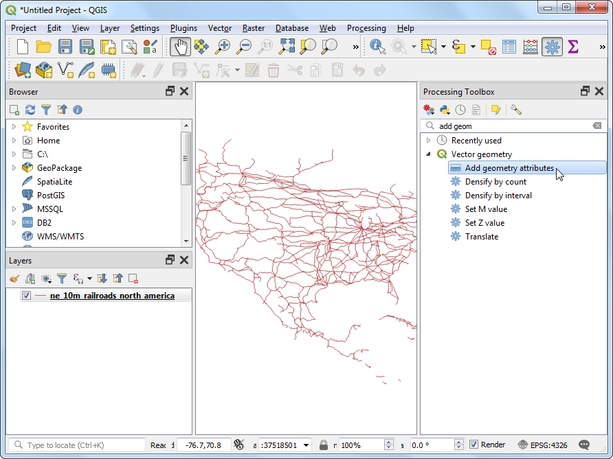
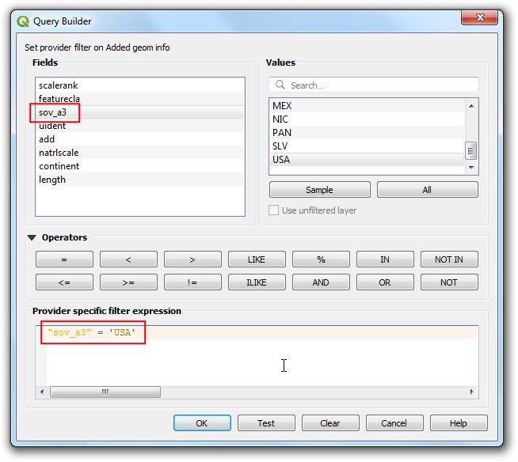

Ujaval Gandhi
Ujaval GandhiCalculating Line Lengths and Statistics (QGIS3)¶
QGIS has built-in functions and algorithms to calculate various properties based on the geometry of the feature - such as length, area, perimeter etc. This tutorial will show how to use the Add geometry attributess tool to add a column with a value representing length of each feature.
Overview of the task¶
Given a polyline layer of railroads in North America, we will determine the total length of railroads in the United States.
Other skills you will learn¶
Using expressions to filter features.
Using the Statistics panel to compute and view statistics on columns.
Get the data¶
Natural Earth has a public domain railroads dataset.
Download the North America supplement zip file from the portal.
For convenience, you may directly download a copy of the dataset from the link below:
ne_10m_railroads_north_america..zip
Data Source [NATURALEARTH]
Procedure¶
Locate the downloaded
ne_10m_railroads_north_america.zipfile in the Browser panel and expand it. Drag thene_10m_railroads_north_america.shpfile to the canvas.

You will see a new layer
ne_10m_railroads_north_americaloaded in the Layers panel. You will see that the layer has lines representing railroads for all of North America. Now, let’s calculate the lengths of each line feature. Go to .

Search for and locate the algorithm. Double-click to launch it.

In the Add Geometry Attributes dialog, select
ne_10m_railroads_north_americaas the Input layer. The input layer’s Coordinate Reference System (CRS) is EPSG:4326 WGS84. This is a Geographic CRS with Latitude and Longitude as coordinates, WGS84 as ellipsoid and degrees as units. Because latitude and longitude don’t have a standard length, you can’t measure distances or areas accurately using planar geometry functions. Fortunately, QGIS provides a better way to compute distances using ellipsoidal geometry, which is the most accurate method for layers spanning large areas such as this. PickEllipsoidalas the Calculate using option. Click Run. Once the process finishes, click Close.

Σημείωση
If your input layer is in a Projected CRS, you may choose Layer CRS option for calculation. Local or Regional projected coordinate systems are designed to minimize distortions over their region of interest, and thus are more accurate for such computation. Ellipsoidal is preferred for layers in a Geographic CRS (i.e. Lat/Lon). The default unit for ellipsoidal length calculation is Meters and can be changed by going to .
You will see a new layer
Added geom infoloaded in the Layers panel. This is a copy of the input layer with a new column added for distance. Right-click theAdded geom infolayer and select Open Attribute Table.

Σημείωση
The Add Geometry Attribute tool adds different set of attributes depending on whether the input layer is points, lines or polygons. See QGIS documentation for more details.
In the Attribute Table, you will see a new column called length. This contains the length of each line feature in meters. Also note that the sov_a3 attribute which contains the country code for each feature. Close the Attribute Table window.

Now that we have lengths of individual railroad line segments, we can add them up to find the total length of railroads. But as the problem statement demands we need total railroad length in the United States, we must use only the segments contained within USA. We can use the country code value in the sov_a3 column to filter the layer. Right-click the
Added geom infolayer and select Filter.

In the Query Builder dialog, enter the following expression and click OK.
"sov_a3" = 'USA'
You will see a Filter icon appear next to the
Added geom infolayer in the Layers panel indicating that a filter is applied to the layer. You can also visually confirm that the layer now contains line segments only for United States. Now we are ready to calculate the sum. Click the Show statistical summary button on the Attributes Toolbar.

A new Statistics panel will open. Select
Added geom infolayer andlengthcolumn.

You will see various statistics displayed in the panel. The unit of the statistics is the same as the units of
lengthcolumn - meters. Let’s change the computation to use kilometers instead. Click the Expression icon next to the fields drop-down menu in the Statistics panel.

Enter the following expression in the Expression Dialog that converts the length to kilometers.
length / 1000
The Sum value displayed is the total length of railroads in USA.

If you want to give feedback or share your experience with this tutorial, please comment below. (requires GitHub account)